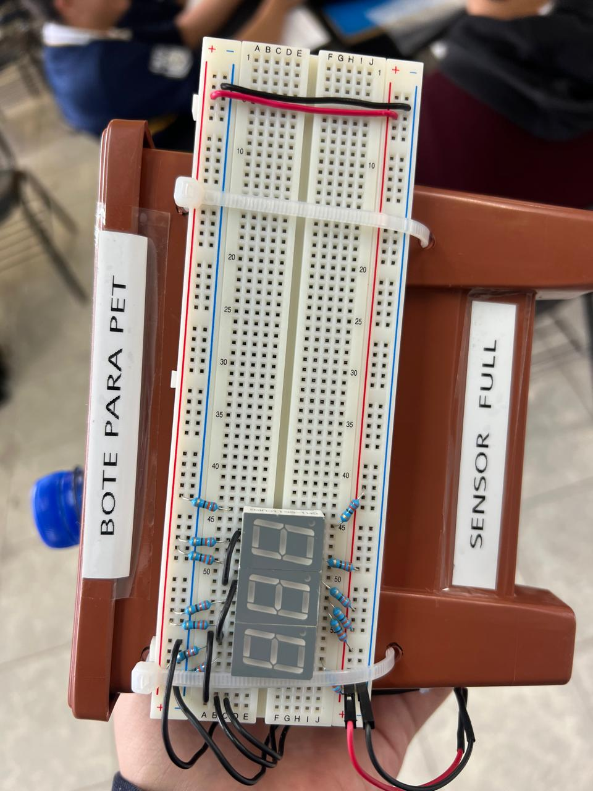
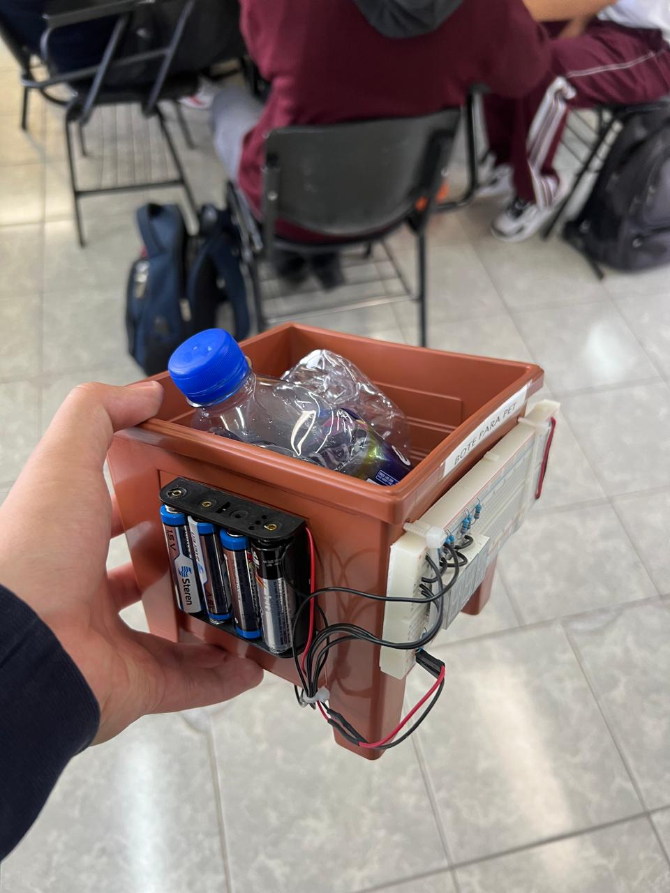
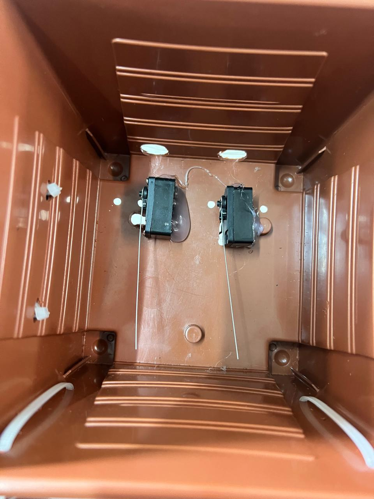

Los residuos sólidos son todos aquellos desechos en estado sólido o semi-sólido que resultan de las actividades humanas, como en hogares, escuelas, industrias, hospitales, comercios y espacios públicos. Comúnmente se les llama "basura", pero no todos los residuos son basura: muchos pueden reciclarse o reutilizarse.
1. Orgánicos: Son restos de origen biológico, como comida, cáscaras de frutas, hojas o restos de jardinería. Son biodegradables y pueden usarse para hacer composta.
2. Inorgánicos reciclables: Materiales como papel, cartón, vidrio, plástico y metales. No se descomponen fácilmente, pero pueden reciclarse.
3. Inorgánicos no reciclables: Aquellos que no se pueden reutilizar o reciclar fácilmente, como papel higiénico usado, colillas de cigarro o empaques sucios.
4. Peligrosos: Representan un riesgo para la salud o el medio ambiente, como pilas, medicamentos caducados, productos químicos, aceites usados y residuos hospitalarios.
1. Contaminación del suelo, agua y aire
2. Proliferación de plagas (moscas, ratas, cucarachas)
3. Malos olores y afectación a la salud
4. Obstrucción de drenajes y riesgo de inundaciones
5. Emisión de gases de efecto invernadero si se queman o se descomponen de forma incorrecta.
El manejo adecuado de residuos sólidos se basa en las 3R:
a. Reducir: Generar menos residuos desde el origen (por ejemplo, evitar productos con exceso de envoltura).
b. Reutilizar: Dar un nuevo uso a los objetos antes de desecharlos.
c. Reciclar: Separar los residuos para que puedan transformarse en nuevos productos.
Para poder solucionar de una mejor manera la problemática que se ha planteado, se propuso crear botes electrónicos que hagan que el momento de tirar basura no solo lo vean como desecharla y ya, si no que lo convierta en un momento mas divertido para que los alumnos se interesen mas por ver como funciona el bote colocando bien sus basuras en los lugares correspondientes


